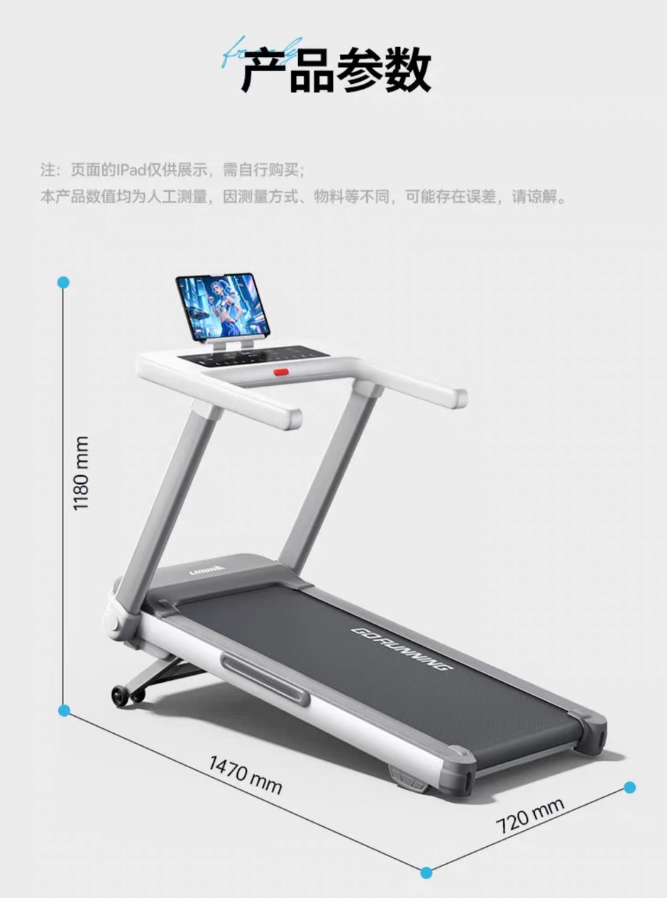
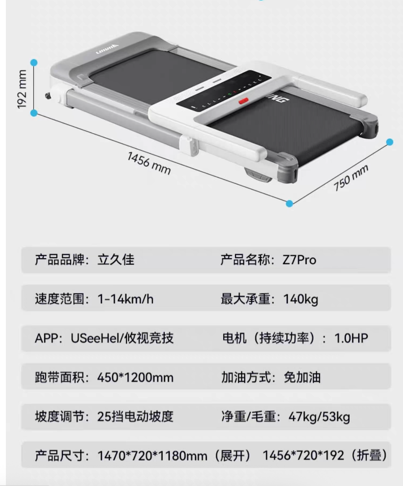

立久佳 · 雪影 Z7PRO / 现款图源核对
来源：用户此前在本对话上传的原始详情页截图。仅在页面内裁切展示，不重绘、不补画按键。

完整原图。现款上电机盖仍保留在图中；后续升级设计才改为下电机盖。

折平状态下，横向黑色控制区、白色面板壳体、中央红色安全钥匙和两侧长扶手的关系可见。
该页同时标注产品名称 Z7Pro。按键小字仍受原图分辨率限制；不据此臆造文字。
待用户核对：是否以这套现款面板轮廓、控制区与扶手布局作为所有版本的共同基准？
打开第37张完整原图 ↗
main 已同步至 8387560。下一步：确认面板后制作连续爬坡 / 收折模型，并将整机竖起作为独立动作；12 个槽位逐项比较，初稿选择由用户填写。